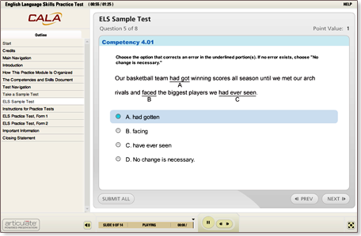

Florida Teacher Certification Examinations (FTCE) General Knowledge Online Practice Test Modules
CALA has worked with thousands of
prospective teachers and listened to their requests related to FTCE test preparation.
As a result, we designed these online practice test modules to help candidates get one step closer to certification.

Each module includes several helpful features:
- a sample test to familiarize you with the test navigation and practice test format
- two practice tests, developed and field-tested by CALA test development experts, that reflect
the number, types, and difficulty of questions you will encounter on the actual FTCE test
- alignment with the Florida Department of Education competencies and skills to help you
analyze your performance on each item and determine what you need to study further
- links to other resources to use during your practice test sessions and for further study
- an opportunity to return and retake the tests as many times as you like within your allotted 30 calendar days
- compatibility with Adobe Flash Player
To try a sample test free of charge, select from the following:
Cost and registration:
The cost of each module is $23 plus a $7 credit/debit card convenience fee.
You will have access to each module for 30 calendar days from the time you register.
Select one of the following to begin the registration process: